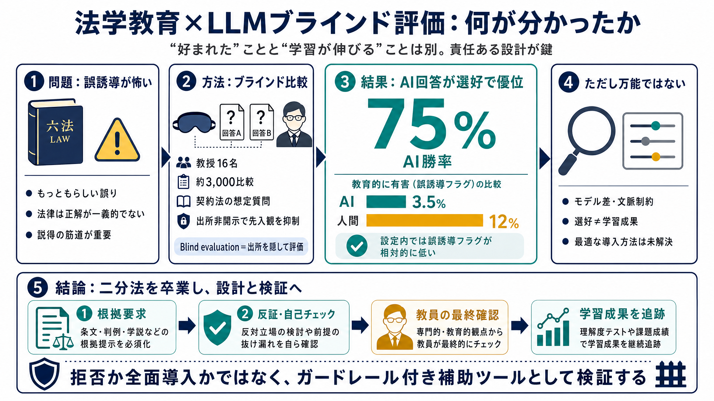

AI Outperforms Law Professors in Stanford Law Study - SLS News and Announcements - Stanford Law School
AI Outperforms Law Professors in Stanford Law Study 1. In a rigorous blind study, law professors overwhelmingly preferre…

スタンフォードのブラインド評価は、生成AIの回答が人間の教授より「選好」で優位だったことを示唆します。とはいえ全面採用は未解決で、責任ある設計が前提です。
生成AIの回答はもっともらしく見えても、誤り（ハルシネーション）で学習をミスリードし得ます。特に法律は「正解が一義的でない」ため、説得力・筋道の評価が重要になります。
契約法の想定質問に対して、教授が作成した回答とLLM回答を用意し、評価者が“AIか人か”を知らない状態で見比べました。
※bilingual: ブラインド評価（Blind evaluation）＝出所非開示で評価の先入観を抑える仕組み。
教授はAI回答を同僚教授の回答より有意に高く評価し、AIが対決の75%で勝ったと報告されています。
「教育的に有害（misleading/harmful）」とフラグされた割合は、AIで3.5%、人間回答で12%でした。
bilingual: 教育的に有害（educationally harmful）＝誤解を招くことで学習の方向を誤らせる可能性。
法律教育の難しさは、単純な正誤ではなく「反対論を踏まえた両立可能性」などの“判断の筋道”にあります。今回の結果は、そのタイプの問いでAIが評価に届き得ることを示唆します。
研究はAIが常に正しいと主張しません。モデル差や文脈制約の影響があり得るため、結果は試験条件に依存します。
Nyarko教授らは、学習効果を最大化する導入方法（運用・設計）は未解決だと釘を刺しており、全面的な導入を推奨していません。
この研究は「回答の良し悪しの評価」です。学生が実際に理解・技能・批判的思考を向上させるか（成績・技能の追跡）までは測っていません。
私は「採用の決定打」ではなく、教員の教育設計を補強するツールとして、どの場面で、どんなガードレール付きなら学習が伸びるかを次に検証すべきだと考えます。
ブラインド比較ではAIが選好で優位（75%）で、「教育的に有害」も相対的に低かった（3.5%）。ただしモデル差・学習効果の追跡・最適運用は未解決で、ガードレール込みの設計が必須です。
注：ユーザー提供テキストに基づく要約のため、書誌情報（論文名・URL等）の厳密な記載は含めていません。必要なら、論文リンク／DOI／正式タイトルを教えてください。
AI Outperforms Law Professors in Stanford Law Study 1. In a rigorous blind study, law professors overwhelmingly preferre…
... (liftlab), led by Professor Julian Nyarko and Dr. Megan Ma, to explore how AI can reshape legal services, research, …
Julian Nyarko is a Professor of Law at Stanford Law School, where he uses new computational methods to study questions o…
My research explores how new computational methods like AI can be used to study questions of legal and social scientific…
# Stanford Launches Liftlab For Legal AI Research. Stanford Law School has launched a new research project, the ‘Legal I…